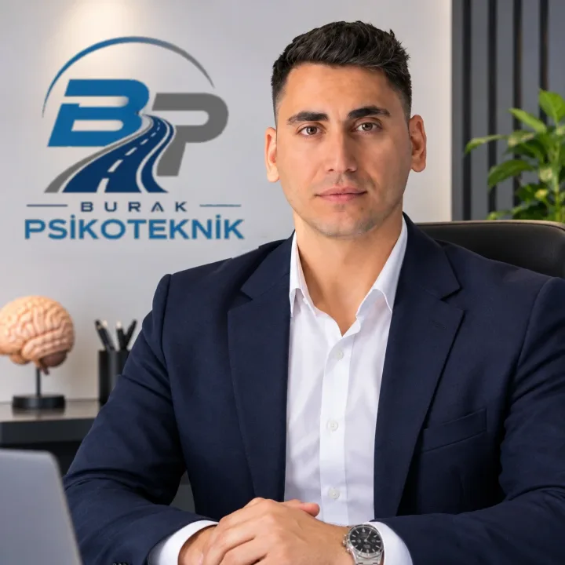

Biz Kimiz?
Burak Psikoteknik Değerlendirme Merkezi, Temmuz 2026'dan bu yana İzmir Karabağlar'da hizmet veren, T.C. Sağlık Bakanlığı onaylı bir psikoteknik değerlendirme merkezidir.
Merkezimizde testler, psikoloğumuz Burak Kamil Elli eşliğinde, onaylı test cihazlarıyla uygulanır. Her adayımıza süreci baştan anlatır, testin her aşamasında yanında oluruz.
Neler Yapıyoruz?
Ticari araç sürücüleri, SRC belgesi için başvuranlar, rapor yenilemesi gerekenler ve ehliyeti geri alınan sürücüler için psikoteknik değerlendirme testi uyguluyoruz. Test; dikkat, algı, tepki süresi, koordinasyon ve muhakeme becerilerini ölçer ve ortalama 1 saat sürer.
Testten sonra bir psikiyatri uzmanına muayene olmanız gerekir. Nihai değerlendirme ve rapor onayı muayeneyi yapan doktora aittir. Süreç adımlarını Psikoteknik Nasıl Alınır? sayfamızda ayrıntılı anlattık.
Sürücü çalıştıran firmalar için haftanın 7 günü, 08:00 - 23:00 arasında toplu psikoteknik randevusu da planlıyoruz.
Merkezimiz
Adres: Yunus Emre Mah. Şht. Pilot Volkan Koçyiğit Blv. No:5 Kat:3 Daire:6, 35380 Karabağlar / İzmir. Yol tarifi alın.
Nasıl Çalışıyoruz?
- Randevulu çalışırız. Sıra beklememeniz için gelmeden önce telefon veya WhatsApp ile randevu almanızı öneririz.
- Ezber ve ön hazırlık gerekmez. Test bir sınav değildir; başlamadan önce her adımı anlatırız.
- Yanınızda olmanız gerekenler: T.C. kimlik kartınız ve sürücü belgeniz.
- Sorularınızı yanıtlarız. Test sonrası süreç ve e-Devlet'ten raporunuzu görüntüleme konusunda sizi bilgilendiririz.
Bilgilendirme: Burak Psikoteknik, T.C. Sağlık Bakanlığı onaylı bir psikoteknik değerlendirme merkezidir. Merkezimizde psikoteknik değerlendirme testi uygulanır; test sonrasında psikiyatri uzmanı muayenesi gerekir ve nihai değerlendirme ile rapor onayı muayeneyi yapan doktora aittir.